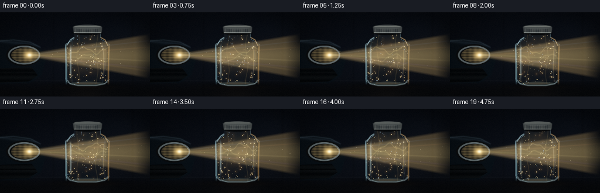
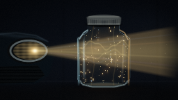
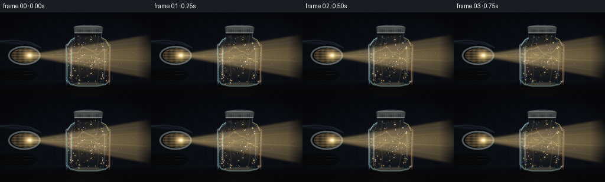

CODING AGENTS AS PIXEL WORLD MODELS
traex/GPT-5.6-Sol · phygen_048
点击播放 · 原生 RGB 像素
逐轮保存的候选
回放视频、检查图与代码变化。
每份候选均可单独播放。实际图片检查记录在下方工具轨迹中。
候选 01播放与检查图
点击播放 · 原生 RGB 像素

展开代码变化
--- 上一保存版本
+++ 本次保存版本
@@ -0,0 +1,320 @@
+from pathlib import Path
+import json
+import math
+import numpy as np
+import cv2
+from PIL import Image, ImageDraw
+import artifact_io
+
+CASE_DIR = Path(__file__).resolve().parent
+SPEC = json.loads((CASE_DIR / "task_spec.json").read_text())
+W, H = int(SPEC["width"]), int(SPEC["height"])
+N = int(SPEC["frames"])
+S = 3
+w, h = W*S, H*S
+Y, X = np.mgrid[0:h, 0:w].astype(np.float32)
+X /= S
+Y /= S
+rng = np.random.default_rng(48051)
+
+
+def clamp01(a):
+ return np.clip(a, 0.0, 1.0)
+
+
+def over(im, color, alpha):
+ a = clamp01(alpha)[..., None]
+ return im * (1.0 - a) + np.asarray(color, np.float32) * a
+
+
+def screen(im, color, alpha):
+ a = clamp01(alpha)[..., None]
+ c = np.asarray(color, np.float32)
+ return 1.0 - (1.0 - im) * (1.0 - c * a)
+
+
+def mask_from_poly(points, blur=0):
+ m = np.zeros((h, w), np.uint8)
+ pts = np.asarray([(round(x*S), round(y*S)) for x, y in points], np.int32)
+ cv2.fillPoly(m, [pts], 255, lineType=cv2.LINE_AA)
+ out = m.astype(np.float32)/255.0
+ if blur:
+ out = cv2.GaussianBlur(out, (0,0), blur*S)
+ return out
+
+
+def ellipse_mask(cx, cy, rx, ry, blur=0):
+ m = np.exp(-0.5*(((X-cx)/(rx+1e-6))**2 + ((Y-cy)/(ry+1e-6))**2))
+ if blur:
+ m = cv2.GaussianBlur(m.astype(np.float32), (0,0), blur*S)
+ return m
+
+
+def hard_ellipse(cx,cy,rx,ry,blur=.3):
+ q=((X-cx)/rx)**2+((Y-cy)/ry)**2
+ return clamp01((1.0-q)*min(rx,ry)/(max(blur,.05)*2)+.5)
+
+
+def draw_polyline_layer(points, color, width, blur=0, alpha=1.0, closed=False):
+ layer = np.zeros((h,w), np.float32)
+ pts=np.asarray([(round(a*S),round(b*S)) for a,b in points], np.int32)
+ cv2.polylines(layer,[pts],closed,float(alpha),max(1,round(width*S)),cv2.LINE_AA)
+ if blur: layer=cv2.GaussianBlur(layer,(0,0),blur*S)
+ return np.asarray(color,np.float32), layer
+
+# Jar silhouette, shared by all frames.
+jar_points=[]
+for yy in np.linspace(34,124,92):
+ if yy < 43:
+ hw=22.5
+ elif yy < 57:
+ u=(yy-43)/14; hw=22.5+15.5*(u*u*(3-2*u))
+ elif yy < 111:
+ hw=38.0
+ elif yy < 119:
+ u=(yy-111)/8; hw=38-3*(u*u)
+ else:
+ u=(yy-119)/5; hw=35-14*(u*u*(3-2*u))
+ jar_points.append((149-hw,float(yy)))
+for yy in np.linspace(124,34,92):
+ if yy < 43:
+ hw=22.5
+ elif yy < 57:
+ u=(yy-43)/14; hw=22.5+15.5*(u*u*(3-2*u))
+ elif yy < 111:
+ hw=38.0
+ elif yy < 119:
+ u=(yy-111)/8; hw=38-3*(u*u)
+ else:
+ u=(yy-119)/5; hw=35-14*(u*u*(3-2*u))
+ jar_points.append((149+hw,float(yy)))
+jar_hard=mask_from_poly(jar_points,0)
+jar_soft=cv2.GaussianBlur(jar_hard,(0,0),.45*S)
+# Interior is inset for clean glass walls.
+k=max(3,round(2.2*S)); kernel=np.ones((k,k),np.uint8)
+jar_inner=cv2.erode((jar_hard*255).astype(np.uint8),kernel,iterations=1).astype(np.float32)/255
+jar_edge=clamp01(jar_hard-cv2.erode((jar_hard*255).astype(np.uint8),np.ones((max(3,round(1.3*S)),)*2,np.uint8),iterations=1)/255.0)
+
+# Stable particles sampled from inside jar.
+particles=[]
+while len(particles)<150:
+ px=rng.uniform(114,184); py=rng.uniform(39,121)
+ ix=min(w-1,max(0,int(px*S))); iy=min(h-1,max(0,int(py*S)))
+ if jar_inner[iy,ix]>.8:
+ particles.append((px,py,rng.uniform(0,2*np.pi),rng.uniform(.22,1.0),rng.uniform(.35,1.0),rng.integers(1,4),rng.uniform(0,1)))
+# Sparse motes outside the jar in the cone.
+out_particles=[]
+for _ in range(26):
+ px=rng.uniform(55,242); center=73.5+.008*(px-50)
+ spread=5+.17*(px-50)
+ py=center+rng.uniform(-.7,.7)*spread
+ out_particles.append((px,py,rng.uniform(0,2*np.pi),rng.uniform(.18,.52),rng.uniform(.15,.5)))
+
+# Subtle fixed sensor/atmospheric grain.
+noise_small=rng.normal(0,1,(H,W)).astype(np.float32)
+noise=cv2.resize(noise_small,(w,h),interpolation=cv2.INTER_CUBIC)
+
+
+def render_frame(fi):
+ tau=2*np.pi*fi/N
+ # Background: deep indigo garage, brighter near the optical axis.
+ vertical=clamp01(Y/144)
+ bg=np.zeros((h,w,3),np.float32)
+ bg[:]=[.010,.016,.028]
+ bg += vertical[...,None]*np.array([.010,.011,.014],np.float32)
+ bg += ellipse_mask(154,76,155,74)[...,None]*np.array([.012,.017,.026],np.float32)
+ # Concrete floor and distant horizon.
+ floor=clamp01((Y-116)/18)
+ bg=over(bg,[.020,.024,.030],floor*.83)
+ horizon=np.exp(-((Y-117)/1.0)**2)
+ bg=screen(bg,[.16,.18,.20],horizon*.08)
+ # A few heavily defocused garage lights/background structures.
+ bg=screen(bg,[.08,.12,.17],ellipse_mask(214,32,25,13)*.08)
+ bg=over(bg,[.006,.009,.015],np.exp(-((X-226)/2.2)**2)*.20)
+ bg=over(bg,[.006,.009,.014],np.exp(-((X-91)/1.8)**2)*.16)
+
+ # Car silhouette on left: hood, fender, bumper.
+ car=mask_from_poly([(0,47),(20,45),(50,49),(69,60),(77,84),(70,108),(52,120),(0,122)],1.2)
+ car_col=np.zeros_like(bg); car_col[:]=[.022,.040,.057]
+ # Cool metallic paint gradient and a warm reflection along the hood.
+ car_col += clamp01((Y-45)/75)[...,None]*np.array([.000,.006,.010],np.float32)
+ car_col += np.exp(-((Y-(49+.11*X))/2.7)**2)[...,None]*np.array([.040,.052,.062],np.float32)
+ bg=over(bg,car_col,car*.96)
+ # Hood crease and lower grille.
+ c,m=draw_polyline_layer([(0,49),(23,47),(52,51),(69,60)],[.25,.31,.36],.65,.7,.45)
+ bg=screen(bg,c,m)
+ grille=mask_from_poly([(0,96),(54,94),(64,108),(49,118),(0,120)],.4)
+ stripes=(np.sin((Y-96)*3.0)>0).astype(np.float32)*.13
+ bg=over(bg,[.005,.007,.009],grille*.78)
+ bg=screen(bg,[.18,.21,.22],grille*stripes)
+
+ # Headlight housing, chrome bezel and internal optics.
+ housing=hard_ellipse(40,73,30,19,1.0)
+ bg=over(bg,[.025,.030,.034],housing*.92)
+ rim=clamp01(hard_ellipse(41,73,27.5,16.2,.8)-hard_ellipse(41,73,24.7,13.5,.8))
+ bg=screen(bg,[.58,.65,.66],rim*.53)
+ lens=hard_ellipse(43,73,24,12.8,.8)
+ lens_tex=.52+.28*np.cos((Y-73)*1.4)+.13*np.cos((X-43)*.7)
+ bg=over(bg,[.21,.18,.115],lens*.32)
+ bg=screen(bg,[1.0,.83,.50],lens*clamp01(lens_tex)*.30)
+ # blazing projector bulb
+ bulb=ellipse_mask(49,73,6.5,5.0)
+ bg=screen(bg,[1.0,.78,.40],bulb*.95)
+ bg=screen(bg,[1.0,.96,.78],ellipse_mask(50,73,2.3,2.0)*.99)
+
+ # Headlight beam behind the jar: broad cone + intensely focused core.
+ dx=np.maximum(X-48,0)
+ center=73.0+.010*dx
+ half=3.2+.175*dx
+ d=np.abs(Y-center)
+ cone=clamp01((half-d)/4.2)*(X>45)
+ cone*=clamp01((250-X)/24+.2)
+ pulse=.98+.02*np.sin(tau)
+ bg=screen(bg,[.96,.68,.31],cone*.155*pulse)
+ bg=screen(bg,[1.0,.91,.62],cone*.095*pulse)
+ core=np.exp(-.5*(d/(2.0+.065*dx))**2)*(X>46)*clamp01((X-45)/14)
+ bg=screen(bg,[1.0,.85,.45],core*.19*pulse)
+ # Fine fan lines visible in haze, with faint spectral fringes.
+ for j,(slope,off,col,a) in enumerate([
+ (-.115,-1.0,[.43,.67,1.0],.055),(-.075,1.5,[1.0,.53,.27],.07),
+ (.050,-.5,[1.0,.86,.45],.09),(.105,1.0,[.72,.42,1.0],.045),(.145,-2,[1.0,.68,.30],.06)]):
+ line_y=73+off+slope*(X-49)+.35*np.sin(tau+j)
+ ray=np.exp(-((Y-line_y)/(1.05+j*.09))**2)*(X>48)
+ ray*=clamp01((X-48)/35)*clamp01((260-X)/30)
+ bg=screen(bg,col,ray*a)
+
+ # Outside motes, softly drifting through the cone.
+ mote_glow=np.zeros((h,w),np.float32); mote_core=np.zeros((h,w),np.float32)
+ for px,py,ph,rad,bright in out_particles:
+ xx=px+2.0*np.sin(tau+ph); yy=py+1.3*np.cos(tau*2+ph)
+ cv2.circle(mote_core,(round(xx*S),round(yy*S)),max(1,round(rad*S)),float(bright),-1,cv2.LINE_AA)
+ mote_glow=cv2.GaussianBlur(mote_core,(0,0),1.0*S)
+ bg=screen(bg,[1.0,.76,.40],mote_glow*.25)
+ bg=screen(bg,[1.0,.91,.70],mote_core*.52)
+
+ # Shadow/reflection of jar on tabletop, grounding it in the scene.
+ shadow=ellipse_mask(150,126,47,5)
+ bg=over(bg,[.003,.004,.006],shadow*.62)
+ reflection=np.exp(-((X-149)/31)**2)*clamp01((Y-123)/16)*(Y>122)
+ bg=screen(bg,[.37,.24,.11],reflection*.045)
+
+ # What happens inside the jar: denser golden volume and refracted caustics.
+ # A cloudy density field makes dusty air read as a real volume rather than isolated dots.
+ cloud=(.48+.18*np.sin((X-112)*.17+(Y-45)*.08+tau)
+ +.15*np.sin((X+Y)*.105-tau*1.0)
+ +.09*np.cos(Y*.31-X*.045+tau*2))
+ cloud=clamp01(cloud)
+ local_center=73+2.2*np.sin((X-112)*.055+tau*.55)
+ localbeam=np.exp(-.5*((Y-local_center)/17.5)**2)
+ volume=jar_inner*cloud*localbeam
+ bg=screen(bg,[.98,.55,.19],volume*.17)
+ bg=screen(bg,[1.0,.88,.53],jar_inner*localbeam*.095)
+ # Three moving luminous curls / intricate scattering bands.
+ bands=np.zeros((h,w),np.float32)
+ band2=np.zeros((h,w),np.float32)
+ y1=65+5.2*np.sin((X-112)*.15+tau)+1.7*np.sin((X-112)*.39-tau)
+ y2=78+6.0*np.sin((X-108)*.115-tau)+1.2*np.cos(X*.38+tau*2)
+ y3=88+3.0*np.sin((X-112)*.20+tau*1.5)
+ bands += np.exp(-((Y-y1)/1.05)**2)*.85
+ bands += np.exp(-((Y-y2)/1.25)**2)*.60
+ band2 += np.exp(-((Y-y3)/1.0)**2)*.48
+ bands*=jar_inner; band2*=jar_inner
+ bg=screen(bg,[1.0,.83,.40],bands*.22)
+ bg=screen(bg,[.35,.66,1.0],band2*.11)
+ # Curved vertical caustics from glass refraction.
+ for j, (bx,col) in enumerate([(121,[.36,.78,1.0]),(133,[1,.71,.30]),(165,[1,.82,.42]),(177,[.47,.67,1.0])]):
+ curve=bx+2.0*np.sin((Y-40)*.10+tau+j)
+ cm=np.exp(-((X-curve)/(.65+j*.05))**2)*jar_inner
+ bg=screen(bg,col,cm*(.07 if j in (0,3) else .095))
+
+ # Animated dust particles, all clipped to the jar interior.
+ glow=np.zeros((h,w),np.float32)
+ cores=np.zeros((h,w),np.float32)
+ bluecores=np.zeros((h,w),np.float32)
+ for px,py,ph,rad,bright,freq,hue in particles:
+ # Small closed orbital drift: coherent motion with no popping at loop boundary.
+ ang=.045*np.sin(tau+ph)
+ ox=px-149; oy=py-77
+ xx=149+ox*np.cos(ang)-oy*np.sin(ang)+1.7*np.sin(freq*tau+ph)
+ yy=77+ox*np.sin(ang)+oy*np.cos(ang)+1.3*np.cos((freq if freq<3 else 2)*tau+ph)
+ ix=int(np.clip(xx*S,0,w-1)); iy=int(np.clip(yy*S,0,h-1))
+ if jar_inner[iy,ix]<.5: continue
+ rr=max(1,round(rad*S))
+ target=bluecores if hue<.13 else cores
+ cv2.circle(target,(round(xx*S),round(yy*S)),rr,float(bright),-1,cv2.LINE_AA)
+ if rad>.72: cv2.circle(glow,(round(xx*S),round(yy*S)),round((rad+1.2)*S),float(bright*.7),-1,cv2.LINE_AA)
+ glow=cv2.GaussianBlur(glow,(0,0),1.5*S)
+ bg=screen(bg,[1.0,.57,.20],glow*.23*jar_inner)
+ bg=screen(bg,[1.0,.88,.58],cores*.70*jar_inner)
+ bg=screen(bg,[.58,.82,1.0],bluecores*.48*jar_inner)
+
+ # Transparent glass tint and dark edge refraction.
+ # The center remains transparent; subtle blue-grey at top/bottom gives material presence.
+ glass_tint=jar_soft*(.035+.035*np.exp(-((Y-43)/17)**2)+.025*np.exp(-((Y-118)/8)**2))
+ bg=over(bg,[.20,.34,.40],glass_tint)
+ # Interior side shadows, caused by cylindrical curvature.
+ side_dist=np.abs(X-149)
+ side=clamp01((side_dist-31)/6)*jar_inner
+ bg=over(bg,[.010,.022,.030],side*.38)
+
+ # Strong glass outline assembled from bright and dark offset strokes.
+ leftedge=np.exp(-((X-(112.2+1.0*np.sin((Y-60)*.035)))/1.3)**2)*clamp01((Y-52)/8)*clamp01((124-Y)/8)
+ rightedge=np.exp(-((X-(185.8-1.0*np.sin((Y-60)*.035)))/1.25)**2)*clamp01((Y-52)/8)*clamp01((124-Y)/8)
+ bg=screen(bg,[.55,.82,.90],leftedge*.44)
+ bg=screen(bg,[1.0,.69,.31],rightedge*.42)
+ bg=screen(bg,[.70,.88,.92],jar_edge*.30)
+ # Vertical specular ribbons and tiny reflected headlight streaks.
+ spec=np.exp(-((X-120.5)/1.35)**2)*clamp01((Y-54)/10)*clamp01((115-Y)/12)*jar_hard
+ spec2=np.exp(-((X-176.7)/.8)**2)*clamp01((Y-58)/10)*clamp01((110-Y)/12)*jar_hard
+ bg=screen(bg,[.80,.94,.94],spec*.35)
+ bg=screen(bg,[1.0,.79,.43],spec2*.22)
+ # shoulder and thick curved base highlights
+ c,m=draw_polyline_layer([(126,43),(120,47),(114,56)],[.74,.92,.96],1.0,.45,.58)
+ bg=screen(bg,c,m)
+ c,m=draw_polyline_layer([(184,57),(179,47),(172,43)],[1.0,.79,.48],.85,.4,.49)
+ bg=screen(bg,c,m)
+ c,m=draw_polyline_layer([(115,116),(119,122),(133,125),(164,125),(179,122),(184,116)],[.73,.86,.87],1.1,.55,.48)
+ bg=screen(bg,c,m)
+ # Bottom glass thickness and warm pool.
+ bottom=hard_ellipse(149,122,30,3.7,.6)*jar_hard
+ bg=screen(bg,[.76,.85,.76],bottom*.15)
+ bg=screen(bg,[1.0,.60,.20],hard_ellipse(149,121.5,20,1.7,.8)*.10)
+
+ # Brushed metal lid, which clearly establishes this as a sealed jar of air.
+ lid_shadow=hard_ellipse(149,35,25,4,1)
+ bg=over(bg,[.008,.011,.013],lid_shadow*.80)
+ lidbody=mask_from_poly([(125,26),(128,23),(170,23),(174,26),(173,35),(126,35)],.5)
+ lidgrad=clamp01(.30+.25*np.sin((X-124)*.43)+.11*np.sin((X-124)*1.6))
+ lidcol=np.zeros_like(bg); lidcol[:]=[.16,.18,.19]; lidcol += lidgrad[...,None]*np.array([.11,.105,.085])
+ bg=over(bg,lidcol,lidbody*.97)
+ # lid top ellipse and ribbing
+ top=hard_ellipse(149,25.2,24,4.1,.7)
+ bg=over(bg,[.25,.27,.27],top*.94)
+ bg=screen(bg,[.64,.65,.58],np.exp(-((Y-24.0)/.65)**2)*clamp01((X-125)/4)*clamp01((173-X)/4)*.45)
+ for lx in np.arange(128,173,3.0):
+ rib=np.exp(-((X-lx)/.34)**2)*clamp01((Y-27)/1.5)*clamp01((35-Y)/1.5)
+ bg=screen(bg,[.55,.56,.52],rib*.20)
+ c,m=draw_polyline_layer([(126,34.5),(172,34.5)],[.74,.78,.75],.65,.3,.60)
+ bg=screen(bg,c,m)
+
+ # Floor contact/reflection in front, then global cinematic finishing.
+ bg=screen(bg,[.45,.26,.09],ellipse_mask(150,128,34,2.6)*.045)
+ vign=clamp01(((X-128)/150)**2+((Y-72)/92)**2)
+ bg*= (1-.34*vign[...,None])
+ bg += noise[...,None]*np.array([.0028,.0025,.0020],np.float32)
+ bg=clamp01(bg)
+ # Downsample with Lanczos for smooth glass and particles.
+ out=cv2.resize(bg,(W,H),interpolation=cv2.INTER_LANCZOS4)
+ # Filmic contrast / gamma; preserve bright highlights.
+ out=clamp01((out*1.08)**.91)
+ return (out*255+.5).astype(np.uint8)
+
+
+def main():
+ frames=np.stack([render_frame(i) for i in range(N)],axis=0)
+ assert frames.shape==(N,H,W,3) and frames.dtype==np.uint8
+ artifact_io.save(frames,CASE_DIR)
+ print(f"saved {frames.shape} RGB frames to {CASE_DIR}")
+
+if __name__=="__main__":
+ main()
候选 02播放与检查图
点击播放 · 原生 RGB 像素
展开代码变化
--- 上一保存版本
+++ 本次保存版本
@@ -304,7 +304,7 @@
bg += noise[...,None]*np.array([.0028,.0025,.0020],np.float32)
bg=clamp01(bg)
# Downsample with Lanczos for smooth glass and particles.
- out=cv2.resize(bg,(W,H),interpolation=cv2.INTER_LANCZOS4)
+ out=clamp01(cv2.resize(bg,(W,H),interpolation=cv2.INTER_LANCZOS4))
# Filmic contrast / gamma; preserve bright highlights.
out=clamp01((out*1.08)**.91)
return (out*255+.5).astype(np.uint8)
可观测工具轨迹
实际执行的命令与返回图片。
命令 1exit 0
/bin/bash -lc "cat prompt.txt && printf '\\n--- GENERATION_RULES ---\\n' && cat GENERATION_RULES.md"
命令 2exit 0
/bin/bash -lc "cat task_spec.json && printf '\\n--- FILES ---\\n' && find . -maxdepth 2 -type f -printf '%p\\n' | sort"
命令 3exit 0
/bin/bash -lc 'cat artifact_io.py'
命令 4exit 0
/bin/bash -lc "python - <<'PY'
import numpy, PIL
print('numpy', numpy.__version__)
print('PIL', PIL.__version__)
try:
import cv2; print('cv2',cv2.__version__)
except Exception as e: print('no cv2',e)
PY
command -v ffmpeg || true"命令 5exit 0
/bin/bash -lc "cat > generate.py <<'PY'
from pathlib import Path
import json
import math
import numpy as np
import cv2
from PIL import Image, ImageDraw
import artifact_io
CASE_DIR = Path(__file__).resolve().parent
SPEC = json.loads((CASE_DIR / \"task_spec.json\").read_text())
W, H = int(SPEC[\"width\"]), int(SPEC[\"height\"])
N = int(SPEC[\"frames\"])
S = 3
w, h = W*S, H*S
Y, X = np.mgrid[0:h, 0:w].astype(np.float32)
X /= S
Y /= S
rng = np.random.default_rng(48051)
def clamp01(a):
return np.clip(a, 0.0, 1.0)
def over(im, color, alpha):
a = clamp01(alpha)[..., None]
return im * (1.0 - a) + np.asarray(color, np.float32) * a
def screen(im, color, alpha):
a = clamp01(alpha)[..., None]
c = np.asarray(color, np.float32)
return 1.0 - (1.0 - im) * (1.0 - c * a)
def mask_from_poly(points, blur=0):
m = np.zeros((h, w), np.uint8)
pts = np.asarray([(round(x*S), round(y*S)) for x, y in points], np.int32)
cv2.fillPoly(m, [pts], 255, lineType=cv2.LINE_AA)
out = m.astype(np.float32)/255.0
if blur:
out = cv2.GaussianBlur(out, (0,0), blur*S)
return out
def ellipse_mask(cx, cy, rx, ry, blur=0):
m = np.exp(-0.5*(((X-cx)/(rx+1e-6))**2 + ((Y-cy)/(ry+1e-6))**2))
if blur:
m = cv2.GaussianBlur(m.astype(np.float32), (0,0), blur*S)
return m
def hard_ellipse(cx,cy,rx,ry,blur=.3):
q=((X-cx)/rx)**2+((Y-cy)/ry)**2
return clamp01((1.0-q)*min(rx,ry)/(max(blur,.05)*2)+.5)
def draw_polyline_layer(points, color, width, blur=0, alpha=1.0, closed=False):
layer = np.zeros((h,w), np.float32)
pts=np.asarray([(round(a*S),round(b*S)) for a,b in points], np.int32)
cv2.polylines(layer,[pts],closed,float(alpha),max(1,round(width*S)),cv2.LINE_AA)
if blur: layer=cv2.GaussianBlur(layer,(0,0),blur*S)
return np.asarray(color,np.float32), layer
# Jar silhouette, shared by all frames.
jar_points=[]
for yy in np.linspace(34,124,92):
if yy < 43:
hw=22.5
elif yy < 57:
u=(yy-43)/14; hw=22.5+15.5*(u*u*(3-2*u))
elif yy < 111:
hw=38.0
elif yy < 119:
u=(yy-111)/8; hw=38-3*(u*u)
else:
u=(yy-119)/5; hw=35-14*(u*u*(3-2*u))
jar_points.append((149-hw,float(yy)))
for yy in np.linspace(124,34,92):
if yy < 43:
hw=22.5
elif yy < 57:
u=(yy-43)/14; hw=22.5+15.5*(u*u*(3-2*u))
elif yy < 111:
hw=38.0
elif yy < 119:
u=(yy-111)/8; hw=38-3*(u*u)
else:
u=(yy-119)/5; hw=35-14*(u*u*(3-2*u))
jar_points.append((149+hw,float(yy)))
jar_hard=mask_from_poly(jar_points,0)
jar_soft=cv2.GaussianBlur(jar_hard,(0,0),.45*S)
# Interior is inset for clean glass walls.
k=max(3,round(2.2*S)); kernel=np.ones((k,k),np.uint8)
jar_inner=cv2.erode((jar_hard*255).astype(np.uint8),kernel,iterations=1).astype(np.float32)/255
jar_edge=clamp01(jar_hard-cv2.erode((jar_hard*255).astype(np.uint8),np.ones((max(3,round(1.3*S)),)*2,np.uint8),iterations=1)/255.0)
# Stable particles sampled from inside jar.
particles=[]
while len(particles)<150:
px=rng.uniform(114,184); py=rng.uniform(39,121)
ix=min(w-1,max(0,int(px*S))); iy=min(h-1,max(0,int(py*S)))
if jar_inner[iy,ix]>.8:
particles.append((px,py,rng.uniform(0,2*np.pi),rng.uniform(.22,1.0),rng.uniform(.35,1.0),rng.integers(1,4),rng.uniform(0,1)))
# Sparse motes outside the jar in the cone.
out_particles=[]
for _ in range(26):
px=rng.uniform(55,242); center=73.5+.008*(px-50)
spread=5+.17*(px-50)
py=center+rng.uniform(-.7,.7)*spread
out_particles.append((px,py,rng.uniform(0,2*np.pi),rng.uniform(.18,.52),rng.uniform(.15,.5)))
# Subtle fixed sensor/atmospheric grain.
noise_small=rng.normal(0,1,(H,W)).astype(np.float32)
noise=cv2.resize(noise_small,(w,h),interpolation=cv2.INTER_CUBIC)
def render_frame(fi):
tau=2*np.pi*fi/N
# Background: deep indigo garage, brighter near the optical axis.
vertical=clamp01(Y/144)
bg=np.zeros((h,w,3),np.float32)
bg[:]=[.010,.016,.028]
bg += vertical[...,None]*np.array([.010,.011,.014],np.float32)
bg += ellipse_mask(154,76,155,74)[...,None]*np.array([.012,.017,.026],np.float32)
# Concrete floor and distant horizon.
floor=clamp01((Y-116)/18)
bg=over(bg,[.020,.024,.030],floor*.83)
horizon=np.exp(-((Y-117)/1.0)**2)
bg=screen(bg,[.16,.18,.20],horizon*.08)
# A few heavily defocused garage lights/background structures.
bg=screen(bg,[.08,.12,.17],ellipse_mask(214,32,25,13)*.08)
bg=over(bg,[.006,.009,.015],np.exp(-((X-226)/2.2)**2)*.20)
bg=over(bg,[.006,.009,.014],np.exp(-((X-91)/1.8)**2)*.16)
# Car silhouette on left: hood, fender, bumper.
car=mask_from_poly([(0,47),(20,45),(50,49),(69,60),(77,84),(70,108),(52,120),(0,122)],1.2)
car_col=np.zeros_like(bg); car_col[:]=[.022,.040,.057]
# Cool metallic paint gradient and a warm reflection along the hood.
car_col += clamp01((Y-45)/75)[...,None]*np.array([.000,.006,.010],np.float32)
car_col += np.exp(-((Y-(49+.11*X))/2.7)**2)[...,None]*np.array([.040,.052,.062],np.float32)
bg=over(bg,car_col,car*.96)
# Hood crease and lower grille.
c,m=draw_polyline_layer([(0,49),(23,47),(52,51),(69,60)],[.25,.31,.36],.65,.7,.45)
bg=screen(bg,c,m)
grille=mask_from_poly([(0,96),(54,94),(64,108),(49,118),(0,120)],.4)
stripes=(np.sin((Y-96)*3.0)>0).astype(np.float32)*.13
bg=over(bg,[.005,.007,.009],grille*.78)
bg=screen(bg,[.18,.21,.22],grille*stripes)
# Headlight housing, chrome bezel and internal optics.
housing=hard_ellipse(40,73,30,19,1.0)
bg=over(bg,[.025,.030,.034],housing*.92)
rim=clamp01(hard_ellipse(41,73,27.5,16.2,.8)-hard_ellipse(41,73,24.7,13.5,.8))
bg=screen(bg,[.58,.65,.66],rim*.53)
lens=hard_ellipse(43,73,24,12.8,.8)
lens_tex=.52+.28*np.cos((Y-73)*1.4)+.13*np.cos((X-43)*.7)
bg=over(bg,[.21,.18,.115],lens*.32)
bg=screen(bg,[1.0,.83,.50],lens*clamp01(lens_tex)*.30)
# blazing projector bulb
bulb=ellipse_mask(49,73,6.5,5.0)
bg=screen(bg,[1.0,.78,.40],bulb*.95)
bg=screen(bg,[1.0,.96,.78],ellipse_mask(50,73,2.3,2.0)*.99)
# Headlight beam behind the jar: broad cone + intensely focused core.
dx=np.maximum(X-48,0)
center=73.0+.010*dx
half=3.2+.175*dx
d=np.abs(Y-center)
cone=clamp01((half-d)/4.2)*(X>45)
cone*=clamp01((250-X)/24+.2)
pulse=.98+.02*np.sin(tau)
bg=screen(bg,[.96,.68,.31],cone*.155*pulse)
bg=screen(bg,[1.0,.91,.62],cone*.095*pulse)
core=np.exp(-.5*(d/(2.0+.065*dx))**2)*(X>46)*clamp01((X-45)/14)
bg=screen(bg,[1.0,.85,.45],core*.19*pulse)
# Fine fan lines visible in haze, with faint spectral fringes.
for j,(slope,off,col,a) in enumerate([
(-.115,-1.0,[.43,.67,1.0],.055),(-.075,1.5,[1.0,.53,.27],.07),
(.050,-.5,[1.0,.86,.45],.09),(.105,1.0,[.72,.42,1.0],.045),(.145,-2,[1.0,.68,.30],.06)]):
line_y=73+off+slope*(X-49)+.35*np.sin(tau+j)
ray=np.exp(-((Y-line_y)/(1.05+j*.09))**2)*(X>48)
ray*=clamp01((X-48)/35)*clamp01((260-X)/30)
bg=screen(bg,col,ray*a)
# Outside motes, softly drifting through the cone.
mote_glow=np.zeros((h,w),np.float32); mote_core=np.zeros((h,w),np.float32)
for px,py,ph,rad,bright in out_particles:
xx=px+2.0*np.sin(tau+ph); yy=py+1.3*np.cos(tau*2+ph)
cv2.circle(mote_core,(round(xx*S),round(yy*S)),max(1,round(rad*S)),float(bright),-1,cv2.LINE_AA)
mote_glow=cv2.GaussianBlur(mote_core,(0,0),1.0*S)
bg=screen(bg,[1.0,.76,.40],mote_glow*.25)
bg=screen(bg,[1.0,.91,.70],mote_core*.52)
# Shadow/reflection of jar on tabletop, grounding it in the scene.
shadow=ellipse_mask(150,126,47,5)
bg=over(bg,[.003,.004,.006],shadow*.62)
reflection=np.exp(-((X-149)/31)**2)*clamp01((Y-123)/16)*(Y>122)
bg=screen(bg,[.37,.24,.11],reflection*.045)
# What happens inside the jar: denser golden volume and refracted caustics.
# A cloudy density field makes dusty air read as a real volume rather than isolated dots.
cloud=(.48+.18*np.sin((X-112)*.17+(Y-45)*.08+tau)
+.15*np.sin((X+Y)*.105-tau*1.0)
+.09*np.cos(Y*.31-X*.045+tau*2))
cloud=clamp01(cloud)
local_center=73+2.2*np.sin((X-112)*.055+tau*.55)
localbeam=np.exp(-.5*((Y-local_center)/17.5)**2)
volume=jar_inner*cloud*localbeam
bg=screen(bg,[.98,.55,.19],volume*.17)
bg=screen(bg,[1.0,.88,.53],jar_inner*localbeam*.095)
# Three moving luminous curls / intricate scattering bands.
bands=np.zeros((h,w),np.float32)
band2=np.zeros((h,w),np.float32)
y1=65+5.2*np.sin((X-112)*.15+tau)+1.7*np.sin((X-112)*.39-tau)
y2=78+6.0*np.sin((X-108)*.115-tau)+1.2*np.cos(X*.38+tau*2)
y3=88+3.0*np.sin((X-112)*.20+tau*1.5)
bands += np.exp(-((Y-y1)/1.05)**2)*.85
bands += np.exp(-((Y-y2)/1.25)**2)*.60
band2 += np.exp(-((Y-y3)/1.0)**2)*.48
bands*=jar_inner; band2*=jar_inner
bg=screen(bg,[1.0,.83,.40],bands*.22)
bg=screen(bg,[.35,.66,1.0],band2*.11)
# Curved vertical caustics from glass refraction.
for j, (bx,col) in enumerate([(121,[.36,.78,1.0]),(133,[1,.71,.30]),(165,[1,.82,.42]),(177,[.47,.67,1.0])]):
curve=bx+2.0*np.sin((Y-40)*.10+tau+j)
cm=np.exp(-((X-curve)/(.65+j*.05))**2)*jar_inner
bg=screen(bg,col,cm*(.07 if j in (0,3) else .095))
# Animated dust particles, all clipped to the jar interior.
glow=np.zeros((h,w),np.float32)
cores=np.zeros((h,w),np.float32)
bluecores=np.zeros((h,w),np.float32)
for px,py,ph,rad,bright,freq,hue in particles:
# Small closed orbital drift: coherent motion with no popping at loop boundary.
ang=.045*np.sin(tau+ph)
ox=px-149; oy=py-77
xx=149+ox*np.cos(ang)-oy*np.sin(ang)+1.7*np.sin(freq*tau+ph)
yy=77+ox*np.sin(ang)+oy*np.cos(ang)+1.3*np.cos((freq if freq<3 else 2)*tau+ph)
ix=int(np.clip(xx*S,0,w-1)); iy=int(np.clip(yy*S,0,h-1))
if jar_inner[iy,ix]<.5: continue
rr=max(1,round(rad*S))
target=bluecores if hue<.13 else cores
cv2.circle(target,(round(xx*S),round(yy*S)),rr,float(bright),-1,cv2.LINE_AA)
if rad>.72: cv2.circle(glow,(round(xx*S),round(yy*S)),round((rad+1.2)*S),float(bright*.7),-1,cv2.LINE_AA)
glow=cv2.GaussianBlur(glow,(0,0),1.5*S)
bg=screen(bg,[1.0,.57,.20],glow*.23*jar_inner)
bg=screen(bg,[1.0,.88,.58],cores*.70*jar_inner)
bg=screen(bg,[.58,.82,1.0],bluecores*.48*jar_inner)
# Transparent glass tint and dark edge refraction.
# The center remains transparent; subtle blue-grey at top/bottom gives material presence.
glass_tint=jar_soft*(.035+.035*np.exp(-((Y-43)/17)**2)+.025*np.exp(-((Y-118)/8)**2))
bg=over(bg,[.20,.34,.40],glass_tint)
# Interior side shadows, caused by cylindrical curvature.
side_dist=np.abs(X-149)
side=clamp01((side_dist-31)/6)*jar_inner
bg=over(bg,[.010,.022,.030],side*.38)
# Strong glass outline assembled from bright and dark offset strokes.
leftedge=np.exp(-((X-(112.2+1.0*np.sin((Y-60)*.035)))/1.3)**2)*clamp01((Y-52)/8)*clamp01((124-Y)/8)
rightedge=np.exp(-((X-(185.8-1.0*np.sin((Y-60)*.035)))/1.25)**2)*clamp01((Y-52)/8)*clamp01((124-Y)/8)
bg=screen(bg,[.55,.82,.90],leftedge*.44)
bg=screen(bg,[1.0,.69,.31],rightedge*.42)
bg=screen(bg,[.70,.88,.92],jar_edge*.30)
# Vertical specular ribbons and tiny reflected headlight streaks.
spec=np.exp(-((X-120.5)/1.35)**2)*clamp01((Y-54)/10)*clamp01((115-Y)/12)*jar_hard
spec2=np.exp(-((X-176.7)/.8)**2)*clamp01((Y-58)/10)*clamp01((110-Y)/12)*jar_hard
bg=screen(bg,[.80,.94,.94],spec*.35)
bg=screen(bg,[1.0,.79,.43],spec2*.22)
# shoulder and thick curved base highlights
c,m=draw_polyline_layer([(126,43),(120,47),(114,56)],[.74,.92,.96],1.0,.45,.58)
bg=screen(bg,c,m)
c,m=draw_polyline_layer([(184,57),(179,47),(172,43)],[1.0,.79,.48],.85,.4,.49)
bg=screen(bg,c,m)
c,m=draw_polyline_layer([(115,116),(119,122),(133,125),(164,125),(179,122),(184,116)],[.73,.86,.87],1.1,.55,.48)
bg=screen(bg,c,m)
# Bottom glass thickness and warm pool.
bottom=hard_ellipse(149,122,30,3.7,.6)*jar_hard
bg=screen(bg,[.76,.85,.76],bottom*.15)
bg=screen(bg,[1.0,.60,.20],hard_ellipse(149,121.5,20,1.7,.8)*.10)
# Brushed metal lid, which clearly establishes this as a sealed jar of air.
lid_shadow=hard_ellipse(149,35,25,4,1)
bg=over(bg,[.008,.011,.013],lid_shadow*.80)
lidbody=mask_from_poly([(125,26),(128,23),(170,23),(174,26),(173,35),(126,35)],.5)
lidgrad=clamp01(.30+.25*np.sin((X-124)*.43)+.11*np.sin((X-124)*1.6))
lidcol=np.zeros_like(bg); lidcol[:]=[.16,.18,.19]; lidcol += lidgrad[...,None]*np.array([.11,.105,.085])
bg=over(bg,lidcol,lidbody*.97)
# lid top ellipse and ribbing
top=hard_ellipse(149,25.2,24,4.1,.7)
bg=over(bg,[.25,.27,.27],top*.94)
bg=screen(bg,[.64,.65,.58],np.exp(-((Y-24.0)/.65)**2)*clamp01((X-125)/4)*clamp01((173-X)/4)*.45)
for lx in np.arange(128,173,3.0):
rib=np.exp(-((X-lx)/.34)**2)*clamp01((Y-27)/1.5)*clamp01((35-Y)/1.5)
bg=screen(bg,[.55,.56,.52],rib*.20)
c,m=draw_polyline_layer([(126,34.5),(172,34.5)],[.74,.78,.75],.65,.3,.60)
bg=screen(bg,c,m)
# Floor contact/reflection in front, then global cinematic finishing.
bg=screen(bg,[.45,.26,.09],ellipse_mask(150,128,34,2.6)*.045)
vign=clamp01(((X-128)/150)**2+((Y-72)/92)**2)
bg*= (1-.34*vign[...,None])
bg += noise[...,None]*np.array([.0028,.0025,.0020],np.float32)
bg=clamp01(bg)
# Downsample with Lanczos for smooth glass and particles.
out=cv2.resize(bg,(W,H),interpolation=cv2.INTER_LANCZOS4)
# Filmic contrast / gamma; preserve bright highlights.
out=clamp01((out*1.08)**.91)
return (out*255+.5).astype(np.uint8)
def main():
frames=np.stack([render_frame(i) for i in range(N)],axis=0)
assert frames.shape==(N,H,W,3) and frames.dtype==np.uint8
artifact_io.save(frames,CASE_DIR)
print(f\"saved {frames.shape} RGB frames to {CASE_DIR}\")
if __name__==\"__main__\":
main()
PY
python generate.py"命令 6exit 0
/bin/bash -lc "python generate.py && python - <<'PY'
from pathlib import Path
import numpy as np
from PIL import Image
p=Path('.')
z=np.load('pixels.npz')['pixels']
imgs=np.stack([np.asarray(Image.open(f'frames/{i:02d}.png').convert('RGB')) for i in range(20)])
print('pixels tensor:', z.shape, z.dtype)
print('frames:', imgs.shape, imgs.dtype, 'range', int(imgs.min()), int(imgs.max()))
print('frame mean brightness:', np.round(imgs.mean(axis=(1,2,3)),2).tolist())
print('adjacent MAE:', np.round(np.abs(np.diff(imgs.astype(np.int16),axis=0)).mean(axis=(1,2,3)),3).tolist())
print('outputs:', {x.name:x.stat().st_size for x in [p/'pixels.npz',p/'inspection.png',p/'transition_check.png',p/'index.html']})
assert z.shape==(144,256,20)
assert imgs.shape==(20,144,256,3) and imgs.dtype==np.uint8
assert all((p/f'frames/{i:02d}.png').is_file() for i in range(20))
PY"视觉工具实际返回图片 1

视觉工具实际返回图片 2

视觉工具实际返回图片 3

保存候选 2 份；完成命令 6 次；可验证图片返回 3 张。原始 API 响应与完整日志保留在本地。